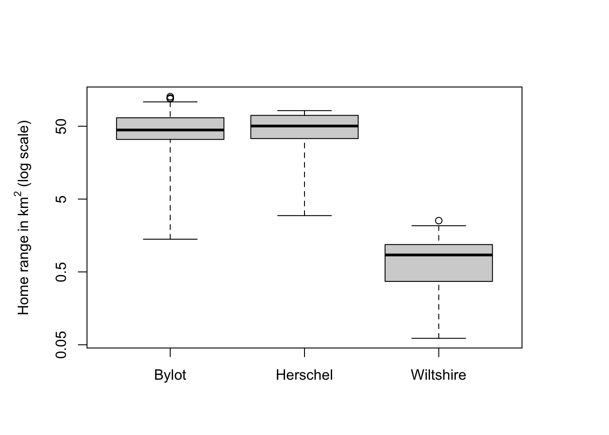
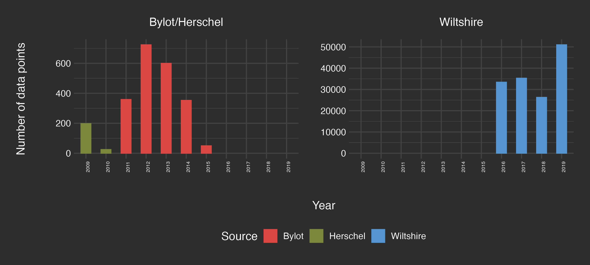
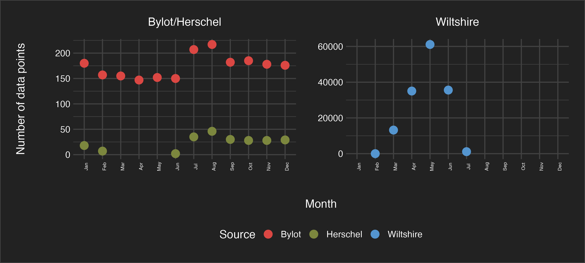
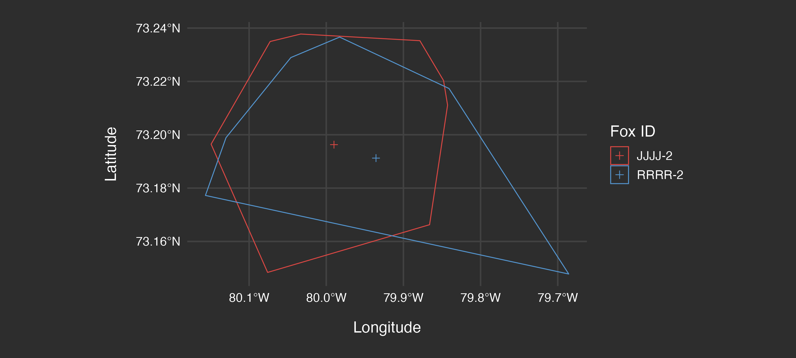
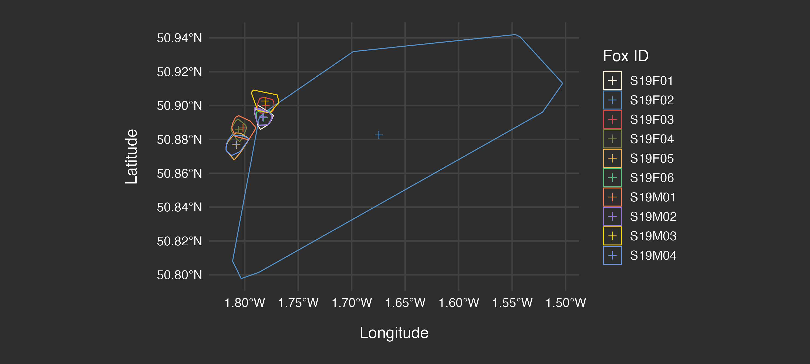
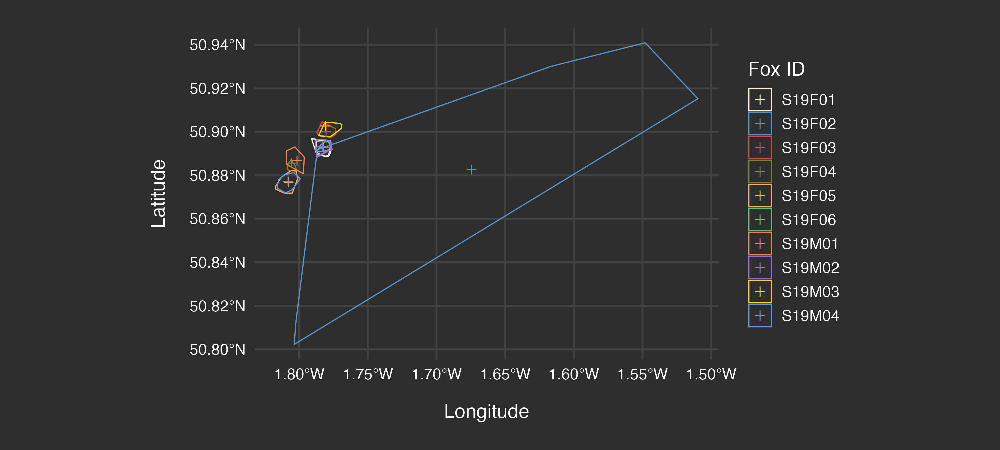
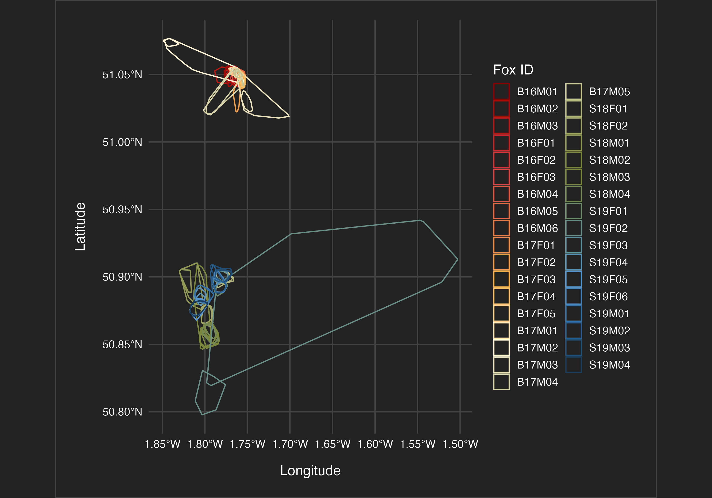
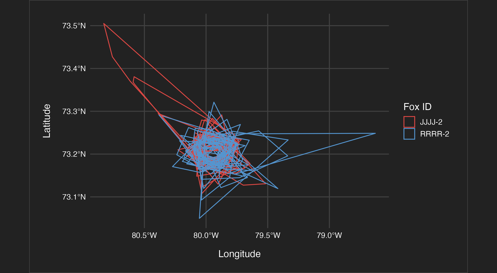
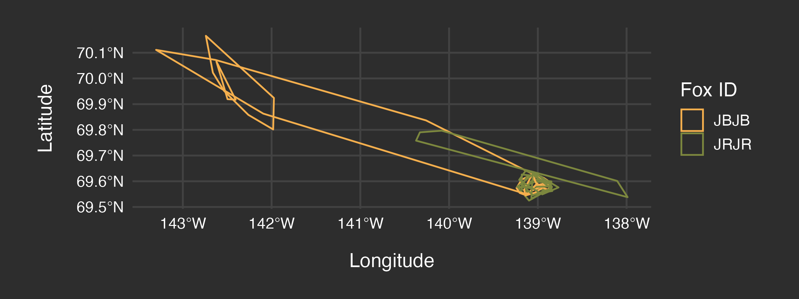

How does human activity affect the movement patterns of wild animals?
An analysis of selected data sets from the Movebank animal tracking database
Abstract
We investigate how human activity influences the movement patterns of wild animals. Using tracking data from red foxes, bobcats, and coyotes across rural and remote areas in England, Canada, and the US, we analyze home range sizes, temporal activity shifts, and habitat selection in relation to human footprint and land use data.
Introduction
Research questions:
- Home Range Implications: Do animals exhibit smaller home ranges in high human-impact areas? Similar to Doherty, Hays, and Driscoll (2021) (TBD download via ZHAW)
- Temporal Shifts in Activity Patterns: Do animals become more nocturnal in high human-impact areas to avoid direct human encounters?
- Habitat Selection in Human-Dominated Landscapes: How do animals select habitats (e.g., forests, agriculture) under varying levels of human influence?
Different data sets are used for each research question. Relying on Movebank data, as described in Section 3.2.1, presents additional challenges stemming from the facts that (1) the data is used for purposes it was not originally collected for and (2) data from different studies that was collected in different manners is compared, and (3) subsets from existing data sets are employed, i.e. only some of the animals from the existing studies are considered.
Material and Methods
This section describes the data sets, the steps taken to prepare and process the different data sets in use, and the methodological approach that was employed.
Data sets
The Movebank database by Kays et al. (2022) provides means for researchers to publish animal tracking data for public use, e.g. under Creative Commons licenses. The following data was selected:
- Red fox data from Porteus et al. (2024) for the outskirt areas of villages in Wiltshire, UK and from Lai et al. (2022) for the highly remote uninhabitated islands Bylot and Herschel, Canada, and
- Bobcat and coyote data from Prugh et al. (2023) for remote areas with some rural structures in northern Washington, US.
For the human footprint data, the global 100 meter resolution terrestrial human footprint data (HFP-100) by Gassert et al. (2023) is chosen. For land use, the ESA WorldCover data described in Zanaga et al. (2022) is employed.
Data preparation and processing
Movebank
All Movebank data sets have the same schema. This simplifies data handling, enables code re-use, and requires the data contributors do perform preprocessing and data cleaning on their side to provide the data in an appropriate format. A library for data processing and trajectory handling in R is provided by Kranstauber, Safi, and Scharf (2024).
The R code for data download, preprocessing, and serialization of relevant data and charts can be found the the following linked documents: Red fox: UK wader nesting season home range, Red fox: montly home ranges.
HRP-100
This raster data set uses the Mollweide projection as described by Lapaine (2011). The 2020 version of the data was used. Since the data set is very large, only the relevant areas were downloaded using a 200 km buffer around the tracking points.
ESA WorldCover
The ESA WorldCover 2021 data at 10m resolution was downloaded via the Microsoft Planetary Computer STAC API [link] for simple programmatic access in R.
Data exploration and analysis
Red fox data
The Wiltshire data was collected between 2016 to 2019 during the UK wader nesting season, which was defined to be March 15th to June 15th, for 35 foxes in total. It was sampled at 10 or 60 minute rates. The research team could set the sampling rate remotely to save battery at times the data was considered less interesting.
The Bylot (see Figure 1) and Herschel (see Figure 2) Canadian data was collected all year round, at a much lower sampling rate of once per day, at random afternoon times of the day. The collection period was June 2009 to Feb 2010 for Herschel and from 2011 to 2015 for Bylot, for two foxes per island. Figure 3 provides an overview of the amount of data points available per year. There is much more data from Wiltshire because of the higher number of foxes and the higher sampling rate.

Looking at the breakdowns by month as shown in Figure 4 reveals seasonal differences in the amount of data available.

Methodology
Trajectory Analysis
Movement paths are analyzed to identify patterns in speed, direction, and habitat use. Step lengths and turning angles help infer behavioral states. Step-selection functions as described by Fortin et al. (2005) are employed as a statistical model for habitat preferences relative to movement patterns, allowing to quantify how animals respond to environmental covariates such as human footprint and land use.
Home Range Assessment
The red fox data is used for home range assessment present for a rural and a remote location. Home range sizes are calculated using minimum convex polygons. This provides estimates of the area used by each individual animal.
As discussed in Section 3.3.1, the data for the two locations have different temporal scale. Laube and Purves (2011) have found that the choice of temporal scale has considerable effects on movement parameter calculations, in turn affecting home range results.
How to make this data comparable? Problem #1 is that the sampling intervals are different. Problem #2 is that the data coverage varies by time of the year. Problem #3 is that there are highly different amounts of data. Selecting the means and parameters for the comparison involves complex choices that will influence the results.
For #1, a possible approach to achieve similar sampling intervals would be to sample a random afternoon data point for each 24 hour window. However, this would include the implicit assumption that foxes will follow similar daily patterns in the different environments. For #2, a possible approach would be to compare the data for the same time of the year. But since the geographical locations are different, the seasonal weather conditions will differ for the same day of the year, likely leading to different animal behavior. For #3, aggregated comparisons can solve the issue, assuming there is enough data for the smaller data source.
For data exploration the simplest possible imperfect approach is employed, which is to ignore the different sampling intervals for problem #1, to compare the data for the same time of the year for problem #2 even if animal behavior might be different, and to use exploratory data analysis to find out if a representative answer can be found given the amount of data present for problem #3. Note that this approach has obvious limits. Among them is that the Herschel data is not applicable, since it has minimal overlaps with the Wiltshire data (see Figure 4).
To explore the impact of sampling intervals for problem #1, the home ranges for the Wiltshire data are additionally calculated on downsampled data, where a random data point from every 24 hour period is selected.
Finally, an analysis of monthly home ranges is conducted on all three data sets as an alternative solution to address problem #2.
Temporal Activity Patterns
Movement rates are used to quantify diel activity shifts. We test whether animals in high human-impact areas exhibit increased nocturnality, potentially as a strategy to avoid direct human encounters. This analysis reveals how temporal behavior adapts to human presence.
Habitat Selection
Step-selection functions quantify selection for human-modified habitats (e.g., agricultural areas, urban edges) relative to natural habitats. By comparing selection patterns across species and regions, we will assess how habitat preferences vary with human influence.
Results
The resulting home ranges for the UK wader nesting season time frame are shown in Figure 5 and Figure 6. The median home range size for the foxes in Bylot (75.3 km2) is more than 65 times bigger compared to the foxes in Wiltshire (1.1 km2).
The home range for the sampled Wiltshire data is shown in Figure 7. It is 0.56 km2 for the sampled data, which is roughly half as much as for the full data. This demonstrates that the influence of sampling intervals is definitely present, but is dwarfed in comparison to the difference in fox behavior.
The same effect, namely differences in order of magnitude between remote and rural fox home ranges, can be observed for the monthly home range results shown as a boxplot in Figure 8. Note that outliers removed, in particular the irregular data for Herschel (as seen in Figure 2) were removed. The accompanying monthly home range plots can be found in the Appendix in Figure 9, Figure 10, and Figure 11.



Model validation
According to Rykiel Jr (1996), model validation means demonstrating that a model is acceptable for its intended use. The purpose, criteria, and context of the model must be specified.
For the purpose of home range comparison, two models were defined comprised of data, home range calculation based on minimum convex hulls, and median selection. The validation criteria requires that the amount of difference between the results is significantly larger than the effects introduced by data properties, which differed between the models.
Since the geographic location context was diverse, to exclude distortions in the coordinate system as a potential reason for the large differences in results, the result for Herschel island were spot checked for three applicable coordinate systems: WGS84, EPSG:3347 (Statistics Canada Lambert), and EPSG:2958 (UTM zone 17N). The latter were identified using the CRS Explorer link. The differences in the median home rage size results for the foxes in Bylot were minor: 75.3 km2 for WGS84, 73.3 km2 for EPSG:3347, and 75.8 km2 for EPSG:2958.
Discussion
The fox home range results differ enormously between rural and remote areas. We conclude that human presence impacts fox movement behavior significantly, with availability of anthropogenic food sources likely being relevant. The influence of technical aspects, like sampling intervals, on home range calculation results is significant. However, it plays a secondary role in comparison to the difference in fox behavior, which enables the chosen approach of comparing data from heterogeneous sources.
Appendix
Don’t do
- There are several ways to calculate home range, we could compare (and could focus on only that)
- Do home range for foxes first, for bobcat and coyote data later, potentially even cross-species analysis
- Use kernel density estimation (KDE)
Wordcount
| Method | koRpus | stringi |
|---|---|---|
| Word count | 552 | 544 |
| Character count | 3611 | 3607 |
| Sentence count | 36 | Not available |
| Reading time | 2.8 minutes | 2.7 minutes |
Additional charts



Use of Large Language Models and Generative AI
Elke used NotebookLM (2025) for querying the papers cited in the references.
References
Doherty, Tim S, Graeme C Hays, and Don A Driscoll. 2021. “Human Disturbance Causes Widespread Disruption of Animal Movement.” Nature Ecology & Evolution 5 (4): 513–19.
Fortin, Daniel, Hawthorne L Beyer, Mark S Boyce, Douglas W Smith, Thierry Duchesne, and Julie S Mao. 2005. “Wolves Influence Elk Movements: Behavior Shapes a Trophic Cascade in Yellowstone National Park.” Ecology 86 (5): 1320–30.
Gassert, Francis, Oscar Venter, James EM Watson, Steven P Brumby, Joseph C Mazzariello, Scott C Atkinson, and Samantha Hyde. 2023. “An Operational Approach to Near Real Time Global High Resolution Mapping of the Terrestrial Human Footprint.” Frontiers in Remote Sensing 4: 1130896.
Kays, Roland, Sarah C Davidson, Matthias Berger, Gil Bohrer, Wolfgang Fiedler, Andrea Flack, Julian Hirt, et al. 2022. “The Movebank System for Studying Global Animal Movement and Demography.” Methods in Ecology and Evolution 13 (2): 419–31.
Kranstauber, Bart, Kamran Safi, and Anne K Scharf. 2024. “Move2: R Package for Processing Movement Data.” Methods in Ecology and Evolution 15 (9): 1561–67.
Lai, Sandra, Chloé Warret Rodrigues, Daniel Gallant, James D Roth, and Dominique Berteaux. 2022. “Red Foxes at Their Northern Edge: Competition with the Arctic Fox and Winter Movements.” Journal of Mammalogy 103 (3): 586–97.
Lapaine, Miljenko. 2011. “Mollweide Map Projection.” KoG 15 (15.): 7–16.
Laube, Patrick, and Ross S Purves. 2011. “How Fast Is a Cow? Cross-Scale Analysis of Movement Data.” Transactions in GIS 15 (3): 401–18.
NotebookLM. 2025. “NotebookLM.” https://notebooklm.google/.
Porteus, Tom A, Mike J Short, Andrew N Hoodless, and Jonathan C Reynolds. 2024. “Movement Ecology and Minimum Density Estimates of Red Foxes in Wet Grassland Habitats Used by Breeding Wading Birds.” European Journal of Wildlife Research 70 (1): 8.
Prugh, Laura R, Calum X Cunningham, Rebecca M Windell, Brian N Kertson, Taylor R Ganz, Savanah L Walker, and Aaron J Wirsing. 2023. “Fear of Large Carnivores Amplifies Human-Caused Mortality for Mesopredators.” Science 380 (6646): 754–58.
Rykiel Jr, Edward J. 1996. “Testing Ecological Models: The Meaning of Validation.” Ecological Modelling 90 (3): 229–44.
Zanaga, Daniele, Ruben Van De Kerchove, Dirk Daems, Wanda De Keersmaecker, Carsten Brockmann, Grit Kirches, Jan Wevers, et al. 2022. “ESA WorldCover 10 m 2021 V200.”